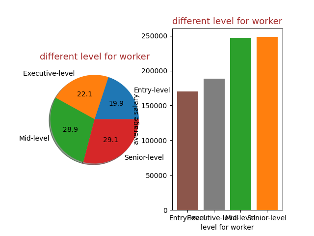
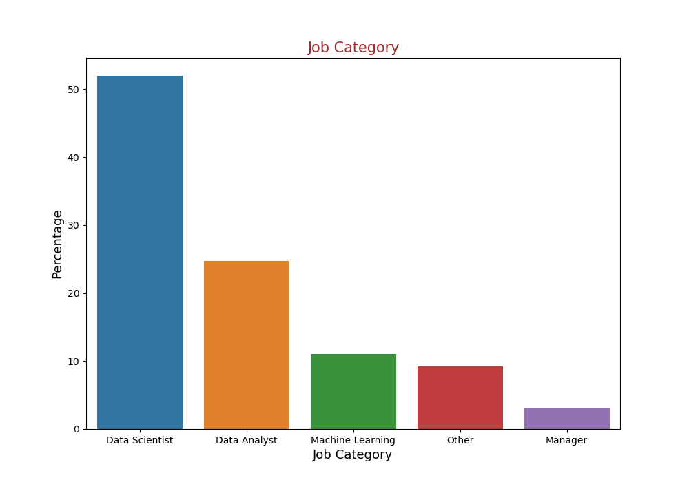
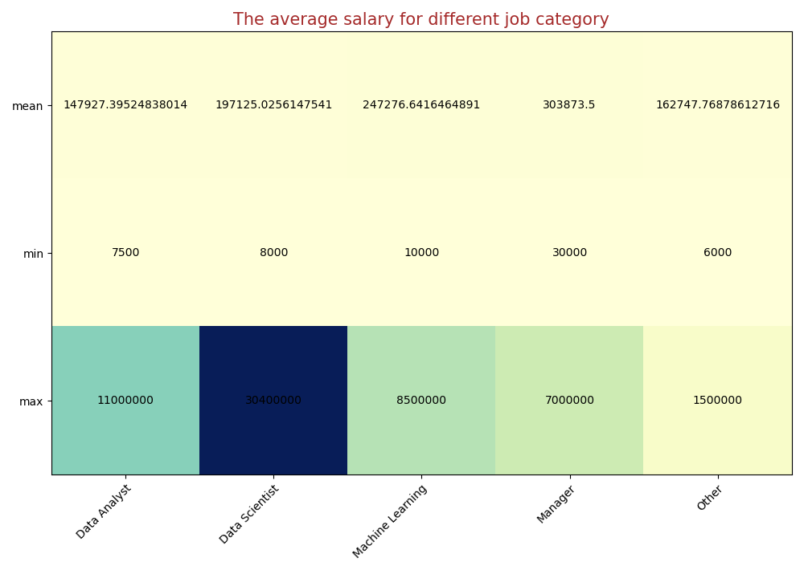
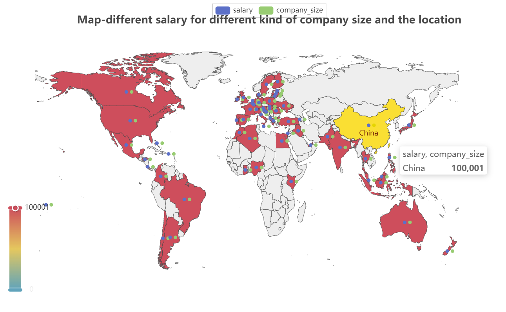
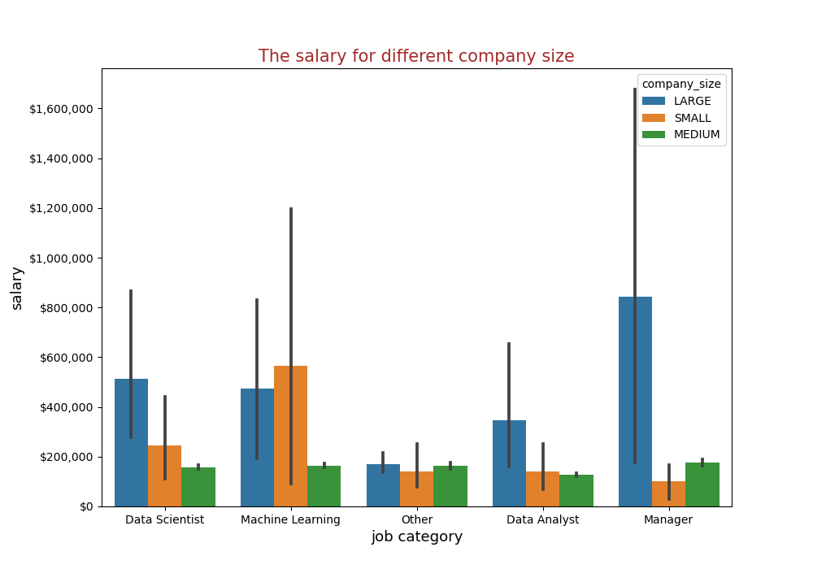

layout: post
title: the example for visualization
date: 2023/5/25
comments: true
updated: 2023/3/23
tags:
df = pd.read_csv('ds_salaries.csv')
""" deal with the dataset"""
# 1. give some key words to classify the job
def classify_job(job_title):
data_analyst = ['Data Architect', 'Analytics', 'Analyst']
machine_learning = ['Machine', 'ML', 'Machine Learning']
data_scientist = ['Data Scientist', 'Data Engineer','BI']
manager = ['Manager', 'Director', 'VP', 'Head']
count = 0
for i in data_analyst:
if i in job_title:
return 'Data Analyst'
count += 1
for i in machine_learning:
if i in job_title:
return 'Machine Learning'
count += 1
for i in data_scientist:
if i in job_title:
return 'Data Scientist'
count += 1
for i in manager:
if i in job_title:
return 'Manager'
count += 1
if count == 0:
return 'Other'
else:
pass
df['job_category'] = df['job_title'].apply(classify_job)
# 2. change the country code to country name
def change_country(alpha_2):
country = pycountry.countries.get(alpha_2=alpha_2)
if country is not None:
return country.name
else:
return 'Unknown'
df['company_location'] = df['company_location'].apply(change_country)
# 3. clean the dataset
if df.isnull().any().any() or df.isna().any().any():
df.replace(" ", np.nan)
df.fillna(0)
else:
print("the dataset is good")
# 4. rename the column name
df['employment_type'] = df['employment_type'].replace({
'FL': 'Freelancer',
'CT': 'Contractor',
'FT': 'Full-time',
'PT': 'Part-time'
})
df['company_size'] = df['company_size'].replace({
'S': 'SMALL',
'M': 'MEDIUM',
'L': 'LARGE',
})
df['experience_level'] = df['experience_level'].replace({
'SE': ' Senior-level',
'MI': 'Mid-level',
'EN': 'Entry-level',
'EX': 'Executive-level'
})
level = df.groupby('experience_level')
EN_money = level['salary'].mean()
print(EN_money)
ax1 = plt.subplot(1,2,1)
plt.title("different level for worker",fontsize=13,color = 'brown')
labels = ['Entry-level','Executive-level ','Mid-level','Senior-level']
plt.pie(EN_money,labels=labels , autopct='%1.1f',shadow=True,colors=['C0', 'C1', 'C2', 'C3'])
ax2 = plt.subplot(1,2,2)
plt.title("different level for worker",fontsize = 13,color = 'brown')
plt.xlabel("level")
plt.ylabel("average salary",rotation="vertical",fontdict={'verticalalignment':'baseline'})
plt.xlabel("level for worker")
plt.bar(labels,EN_money,color=['C5', 'C7', 'C2', 'C1'])

job = df.groupby('job_category')
values_count = df['job_category'].value_counts(normalize=True)*100
# the percentage of different job category
fig , ax = plt.subplots(figsize=(10,7))
sns.barplot(x=values_count.index,y=values_count,ax=ax)
plt.title("Job Category",fontsize=15,color='brown')
plt.xlabel("Job Category",fontsize=13)
plt.ylabel("Percentage",fontsize=13)
# plt.savefig('job_category_rate.png')
# plt.show()
# the average salary for different job category
list_job = ['Data Analyst', 'Data Scientist', 'Machine Learning', 'Manager', 'Other']
list_mean_salary = list(job['salary'].mean())
list_min_salary = list(job['salary'].min())
list_max_salary = list(job['salary'].max())
# 使用imshow()
color = ['C0', 'C1', 'C2', 'C3', 'C4']
fig, ax = plt.subplots(figsize=(10, 7))
im = ax.imshow([list_mean_salary, list_min_salary,list_max_salary], cmap='YlGnBu')
ax.set_xticks(np.arange(len(list_job)))
ax.set_yticks(np.arange(3))
ax.set_xticklabels(list_job)
ax.set_yticklabels(['mean', 'min', 'max'])
plt.setp(ax.get_xticklabels(), rotation=45, ha="right",
rotation_mode="anchor")
for i in range(3):
for j in range(len(list_job)):
text = ax.text(j, i, [list_mean_salary, list_min_salary,list_max_salary][i][j],
ha="center", va="center", color="black")
ax.set_title("The average salary for different job category",fontsize=15,color='brown')
fig.tight_layout()


grouped = df.groupby('employment_type')
employment = grouped['salary'].mean().index.tolist()
average_salary = []
for i in employment:
remote_group = grouped.get_group(i).loc[:, ['salary', 'remote_ratio']]
average_salary.append(remote_group.groupby('remote_ratio')['salary'].mean().tolist())
for i in range(len(average_salary)):
if len(average_salary[i]) != 3:
average_salary[i].append(0)
# print(average_salary)
bar3d = Bar3D()
xaxis = [0,1,2,3]
ratio = df.groupby('remote_ratio')['salary'].mean().index.tolist()
yaxis = [0,1,2]
data = average_salary
data = [[xaxis[i], yaxis[j], data[i][j]] for i in range(len(xaxis)) for j in range(len(yaxis))]
# print(data)
(
bar3d.add(
series_name="",
data=data,
xaxis3d_opts=opts.Axis3DOpts(type_="category", data=employment, name="employment_type", name_gap=30,
is_show=True,grid_3d_index=0,axislabel_opts=opts.LabelOpts(rotate=-30)),
yaxis3d_opts=opts.Axis3DOpts(type_="category", data=ratio, name="remote_ratio", name_gap=30,is_show=True,grid_3d_index=0,
axislabel_opts=opts.LabelOpts(rotate=-30)),
zaxis3d_opts=opts.Axis3DOpts(type_="value", name="salary", name_gap=30,is_show=True,grid_3d_index=0,),
grid3d_opts=opts.Grid3DOpts(view_control_alpha=60, view_control_beta=10),
)
.set_global_opts(
title_opts=opts.TitleOpts(title="the salary of remote_ration and employment_type "),
visualmap_opts=opts.VisualMapOpts(
max_=800000,
range_color=[
"#313695",
"#4575b4",
"#74add1",
"#abd9e9",
"#e0f3f8",
"#ffffbf",
"#fee090",
"#fdae61",
"#f46d43",
"#d73027",
"#a50026",
],
)
)
)
group_country = df.groupby('company_location')
countries_mean = group_country['salary'].mean()
country_money = []
for i in countries_mean.index.tolist():
country_money.append([i, countries_mean[i]])
group_country = df.groupby('company_location')
countries_mean = group_country['salary'].mean()
country_money = []
for i in countries_mean.index.tolist():
country_money.append([i, countries_mean[i]])
size = group_country['company_size'].value_counts()
size = size.unstack() # unstack the data
size = size.fillna(0)
size = size.astype(int) # change the data type
size = size.reset_index() # reset the index
size = size.values.tolist()
for i in range(len(size)):
arr = size[i][1:]
company_size = [size[i][0], arr]
size[i] = company_size
c = (
Map()
.add("salary", country_money, "world")
.add("company_size", size, "world")
.set_series_opts(label_opts=opts.LabelOpts(is_show=False))
.set_global_opts(
title_opts=opts.TitleOpts(title="Map-different salary for different kind of company size and the location",pos_left='center',pos_top='top',padding=20),
visualmap_opts=opts.VisualMapOpts(max_=300),
)
# .render("map_world.html")
)

jobs_money = df.loc[:, ['job_category', 'salary','company_size']]
plt,ax = plt.subplots(figsize=(10,7))
sns.barplot(x='job_category', y='salary', hue='company_size', data=jobs_money)
ax.set_title("The salary for different company size",fontsize=15,color='brown')
ax.set_xlabel("job category",fontsize=13)
ax.set_ylabel("salary",fontsize=13)
ax.yaxis.set_major_formatter(ticker.FuncFormatter(lambda y, _: '${:,.0f}'.format(y)))
